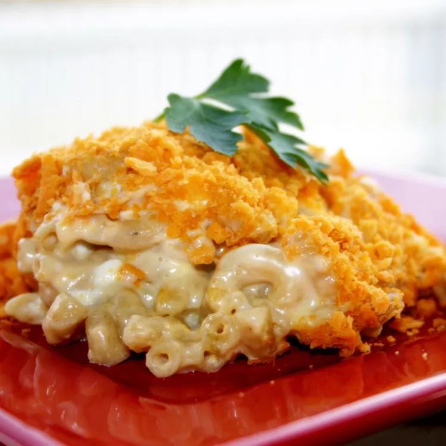

Home
Mac & Cheese

This mac and cheese with cottage cheese is easily doubled for a potluck or family function. My whole family loves this recipe!
Of all the dishes I have tried from this site, this is one of my top favorites, and my family and friends rave about it. I make it exactly as directed except skip the breadcrumbs and cover the top in a thick layer of cheese instead. It is interesting to read all the mixed reviews on this mac and cheese, because depending upon what part of the country you are from, people eat different kinds of mac and cheese. Some people like creamy and some people like it the way this one is made. The mac and cheese that I am used to making and eating that taste like this is made with egg. The cottage cheese in this recipe gives the same consistency of that without the egg, and I like that. Thanks so much! This recipe has really been a great find for me!
Ingredients:
- 1 (8 ounce) package elbow macaroni
- 1 cup dry bread crumbs
- ¼ cup butter, melted
- 1 (12 ounce) container small curd cottage cheese
- 1 (8 ounce) package shredded sharp Cheddar cheese
- 1 (8 ounce) container sour cream
- ¼ cup grated Parmesan cheese
- salt and pepper to taste
Directions:
- Preheat the oven to 350 degrees F (175 degrees C). Grease a 9x13-inch baking dish.
- Bring a large pot of lightly salted water to a boil. Cook elbow macaroni in the boiling water, stirring occasionally, until tender yet firm to the bite, about 8 minutes. Drain.
- Mix bread crumbs and melted butter together in a small bowl.
- Transfer drained macaroni to the prepared baking dish. Add cottage cheese, Cheddar, sour cream, Parmesan, salt, and pepper; stir until well combined. Sprinkle bread crumb mixture over top.
- Bake in the preheated oven until golden brown on top, 30 to 35 minutes.